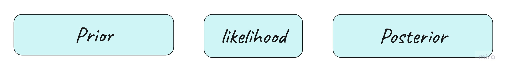

flowchart BT
A([Python]) -----> E([PyMC])
B([Statistics])--->D([A/B testing])
B([Statistics]) ---> C([Bayes Rule])
C([Bayes Rule]) --> D([A/B testing])
C([Bayes Rule]) ---> F[(Bayesian A/B Testing in PyMC)]
E([PyMC]) --> F[(Bayesian A/B Testing in PyMC)]
D([A/B testing]) ---> F[(Bayesian A/B Testing in PyMC)]
click A "https://github.com/epfl-exts/WEF-workshop-2023/tree/main/Day1-01"
click B "https://github.com/epfl-exts/WEF-workshop-2023/tree/main/Day1-02"
click C "https://github.com/epfl-exts/WEF-workshop-2023/tree/main/Day1-03"
click D "https://github.com/epfl-exts/WEF-workshop-2023/tree/main/Day1-04"
click E "https://github.com/epfl-exts/WEF-workshop-2023/tree/main/Day2-01"
click F "https://github.com/epfl-exts/WEF-workshop-2023/tree/main/Day2-01"
linkStyle 5,6 stroke:#bcf5bc,stroke-width:6px
%% style A fill:#bcf5bc
%% style B fill:#bcf5bc
%% style C fill:#bcf5bc
style D fill:#bcf5bc
style E fill:#bcf5bc
style F fill:#bcf5bc
Bayesian A/B Testing
Bernoulli and Value Conversions
EPFL Extension School
World Economic Forum
2023-09-29
What’s the Plan?
This session
Goal of This Session:
✔️ Python
✔️ Statistical Distributions
✔️ Bayesian Statistics
✔️ Bayesians vs Frequentists
✔️ A/B Testing
☐ A/B Testing in Python
A/B Testing
- We have a website and we want to increase the number of
visitorsthat make a subscription - We have two versions of the website:
AandB
- We want to know which version leads to more
subscriptions - We can use A/B testing to compare the two versions
Note
- Here the target action is the
subscriptions, but we can generalize this to any action that we want to increase, e.g. clicks, purchases, likes, time spent on the website, etc. - A visitor that makes a subscription is called a
conversion
Setting up the Model
Parameters
- \(\theta_A\) is the conversion probability for version A
- \(\theta_B\) is the conversion probability for version B
Priors
- Conversion probabilities are Beta distributed: \[\theta_A \sim Beta(\alpha_A, \beta_A)\] \[\theta_B \sim Beta(\alpha_B, \beta_B)\]
- For simplicity we assume \(\alpha_A=\beta_A=\alpha_B=\beta_B\)
Setting up the Model
Likelihoods
- Both versions get
visitors - Whether a visitor converts is Bernoulli distributed with conversion probability \(\theta\)
Posteriors
- Remember that in this case posteriors are also Beta distributed, thanks to the conjugate property
- We can get them via sampling methods too. So no worries if we can’t benefit from the conjugate property
Remarks
Notes
- Priors can follow other distributions than Beta
- Priors can be different for each version
- Number of visitors can be different for each version
- Conversions are happenning independently
What Do We Want to Know?
Our goal is to find out which version is better, and that’s why we need the uplift \(\frac{\theta_B}{\theta_A}-1\):
- if the
uplift > 0, then version B is better - if the
uplift < 0, then version A is better - if the
uplift = 0, then there is no difference between the two versions
Tip
Luckily we get the whole uplift distribution, not just these three states 😃

Define Parameters in
Creating a Model in
with pm.Model() as example_model:
# Priors for unknown model parameters
theta = pm.Beta("theta",
alpha = alpha,
beta = beta,
shape = 2)
# Likelihood (sampling distribution) of observations
obs = pm.Binomial("y",
n = visitors,
observed = conversion,
p = theta,
shape = 2)
# Difference between variants
relative_uplift = pm.Deterministic("uplift",
theta[1] / theta[0] - 1)
# Draw samples from the posterior
trace = pm.sample(draws=1000, return_inferencedata=False, progressbar=False)
Checking the Model Specification
Unobserved Random Variables:
Observed Random Variables:
Ploting the Output
# let's create a subplot with three plots in a row that shows the theta_A, theta_B and uplift
fig, ax = plt.subplots(1, 3, figsize=(12, 3), sharey=True, sharex=True)
# plot the distribution of theta_A
ax[0].hist(df['theta_A'],bins=50,)
ax[0].set_title(r'$\theta_A$')
# plot the distribution of theta_B
ax[1].hist(df['theta_B'],bins=50,)
ax[1].set_title(r'$\theta_B$')
# plot the distribution of uplift
ax[2].hist(df['uplift'], bins=50,)
ax[2].set_title('uplift')
plt.show()
Changing the Output Type
with pm.Model() as example_model:
# Priors for unknown model parameters
theta = pm.Beta("theta",
alpha = alpha,
beta = beta,
shape = 2)
# Likelihood (sampling distribution) of observations
obs = pm.Binomial("y",
n = visitors,
p = theta,
observed = conversion,
shape = 2)
# Difference between variants
relative_uplift = pm.Deterministic("uplift",
theta[1] / theta[0] - 1)
# Draw samples from the prior
trace = pm.sample(draws=1000,
return_inferencedata=True)
100.00% [8000/8000 00:02<00:00 Sampling 4 chains, 0 divergences]
Changing the Output Type
Let’s check the output:
arviz.InferenceData
-
- chain: 4
- draw: 1000
- theta_dim_0: 2
- chain(chain)int640 1 2 3
array([0, 1, 2, 3])
- draw(draw)int640 1 2 3 4 5 ... 995 996 997 998 999
array([ 0, 1, 2, ..., 997, 998, 999])
- theta_dim_0(theta_dim_0)int640 1
array([0, 1])
- theta(chain, draw, theta_dim_0)float640.2094 0.2154 ... 0.193 0.2036
array([[[0.20937209, 0.21544031], [0.20937209, 0.21544031], [0.18578411, 0.19172663], ..., [0.19115618, 0.18798946], [0.21459946, 0.216669 ], [0.19604576, 0.18430353]], [[0.20617011, 0.20451001], [0.20602158, 0.20909153], [0.21136192, 0.21041967], ..., [0.20332816, 0.20851232], [0.19389191, 0.19576568], [0.2029186 , 0.19558808]], [[0.19989294, 0.20480675], [0.20485683, 0.18168999], [0.22534091, 0.21752482], ..., [0.20079794, 0.18755524], [0.19300281, 0.19622162], [0.19475702, 0.20387853]], [[0.18781307, 0.20775013], [0.22412981, 0.20901067], [0.19290262, 0.19924031], ..., [0.19810169, 0.22561612], [0.195872 , 0.2008771 ], [0.1930299 , 0.20364261]]]) - uplift(chain, draw)float640.02898 0.02898 ... 0.02555 0.05498
array([[ 0.0289829 , 0.0289829 , 0.03198617, ..., -0.01656614, 0.00964374, -0.05989534], [-0.00805207, 0.01490108, -0.00445802, ..., 0.02549654, 0.00966398, -0.03612543], [ 0.02458221, -0.11308795, -0.03468562, ..., -0.06595039, 0.01667756, 0.04683532], [ 0.10615375, -0.06745707, 0.03285434, ..., 0.13889047, 0.02555288, 0.05497962]])
- chainPandasIndex
PandasIndex(Int64Index([0, 1, 2, 3], dtype='int64', name='chain'))
- drawPandasIndex
PandasIndex(Int64Index([ 0, 1, 2, 3, 4, 5, 6, 7, 8, 9, ... 990, 991, 992, 993, 994, 995, 996, 997, 998, 999], dtype='int64', name='draw', length=1000)) - theta_dim_0PandasIndex
PandasIndex(Int64Index([0, 1], dtype='int64', name='theta_dim_0'))
- created_at :
- 2023-09-19T09:55:11.526932
- arviz_version :
- 0.16.0
- inference_library :
- pymc
- inference_library_version :
- 5.5.0
- sampling_time :
- 18.27219009399414
- tuning_steps :
- 1000
<xarray.Dataset> Dimensions: (chain: 4, draw: 1000, theta_dim_0: 2) Coordinates: * chain (chain) int64 0 1 2 3 * draw (draw) int64 0 1 2 3 4 5 6 7 ... 993 994 995 996 997 998 999 * theta_dim_0 (theta_dim_0) int64 0 1 Data variables: theta (chain, draw, theta_dim_0) float64 0.2094 0.2154 ... 0.2036 uplift (chain, draw) float64 0.02898 0.02898 ... 0.02555 0.05498 Attributes: created_at: 2023-09-19T09:55:11.526932 arviz_version: 0.16.0 inference_library: pymc inference_library_version: 5.5.0 sampling_time: 18.27219009399414 tuning_steps: 1000xarray.Dataset -
- chain: 4
- draw: 1000
- chain(chain)int640 1 2 3
array([0, 1, 2, 3])
- draw(draw)int640 1 2 3 4 5 ... 995 996 997 998 999
array([ 0, 1, 2, ..., 997, 998, 999])
- energy_error(chain, draw)float640.2013 0.0 ... -0.6722 0.04775
array([[ 0.2012512 , 0. , 0.00737001, ..., 0.18228916, 0.20763615, -0.13983696], [-0.35301362, 0.06227983, 0.12337253, ..., -1.13410666, 0.00297214, -0.04353356], [-0.24483796, 0.32592443, 0.39719716, ..., -0.29568362, -0.07762519, -0.03093065], [ 0.07315742, 0.38216978, -0.54938587, ..., 0.16086966, -0.67219551, 0.04775064]]) - perf_counter_diff(chain, draw)float640.0003528 0.0003493 ... 0.0003256
array([[0.00035278, 0.00034935, 0.00036054, ..., 0.0003948 , 0.00068685, 0.00064501], [0.00073487, 0.00033081, 0.00031689, ..., 0.00041643, 0.00037091, 0.00056979], [0.0003626 , 0.00035528, 0.00074046, ..., 0.00034731, 0.00035856, 0.00034787], [0.00033958, 0.00040536, 0.00057514, ..., 0.00031746, 0.00030635, 0.0003256 ]]) - lp(chain, draw)float64-11.48 -11.48 ... -10.65 -10.79
array([[-11.47644573, -11.47644573, -11.54099908, ..., -11.37539246, -11.9455978 , -11.50798478], [-10.71983955, -10.88823956, -11.22372739, ..., -10.79187966, -10.79366776, -10.67300196], [-10.63315494, -11.80688654, -13.24216978, ..., -11.12673153, -10.82115158, -10.71838764], [-11.26173748, -12.43087599, -10.77134223, ..., -12.44128319, -10.64772802, -10.78803508]]) - n_steps(chain, draw)float643.0 3.0 3.0 3.0 ... 3.0 3.0 3.0 3.0
array([[3., 3., 3., ..., 3., 3., 3.], [3., 1., 1., ..., 3., 3., 3.], [3., 3., 3., ..., 3., 3., 3.], [3., 3., 3., ..., 3., 3., 3.]]) - step_size_bar(chain, draw)float641.142 1.142 1.142 ... 1.195 1.195
array([[1.1417399 , 1.1417399 , 1.1417399 , ..., 1.1417399 , 1.1417399 , 1.1417399 ], [1.15595306, 1.15595306, 1.15595306, ..., 1.15595306, 1.15595306, 1.15595306], [1.2251203 , 1.2251203 , 1.2251203 , ..., 1.2251203 , 1.2251203 , 1.2251203 ], [1.19486325, 1.19486325, 1.19486325, ..., 1.19486325, 1.19486325, 1.19486325]]) - reached_max_treedepth(chain, draw)boolFalse False False ... False False
array([[False, False, False, ..., False, False, False], [False, False, False, ..., False, False, False], [False, False, False, ..., False, False, False], [False, False, False, ..., False, False, False]]) - energy(chain, draw)float6412.47 14.93 12.14 ... 11.87 10.8
array([[12.47483092, 14.93359033, 12.14411785, ..., 11.53288895, 11.98572173, 12.06839131], [11.75266249, 10.92947407, 11.31041188, ..., 14.77256202, 11.02458036, 10.82044119], [11.41366718, 11.98302064, 16.43591159, ..., 12.03214462, 11.74580043, 10.89034556], [12.75208294, 13.61803293, 12.3779542 , ..., 13.1075893 , 11.86650136, 10.80025121]]) - acceptance_rate(chain, draw)float640.6772 0.2883 0.949 ... 1.0 0.9822
array([[0.67716552, 0.28827719, 0.94897278, ..., 0.92152115, 0.93750087, 1. ], [0.98740181, 0.93961991, 0.88393431, ..., 0.84865125, 0.9680683 , 0.99965938], [1. , 0.83522088, 0.46844066, ..., 0.99519577, 0.91615156, 1. ], [0.75035682, 0.65437752, 0.93234475, ..., 0.95046768, 1. , 0.9822081 ]]) - process_time_diff(chain, draw)float640.000354 0.00035 ... 0.000326
array([[0.000354, 0.00035 , 0.00036 , ..., 0.000395, 0.000688, 0.000644], [0.000731, 0.000331, 0.000318, ..., 0.000417, 0.000372, 0.00054 ], [0.000363, 0.000355, 0.000703, ..., 0.000348, 0.000359, 0.000349], [0.000339, 0.000401, 0.000556, ..., 0.000318, 0.000307, 0.000326]]) - index_in_trajectory(chain, draw)int64-3 0 -2 2 0 0 ... -2 2 -1 -1 -1 -1
array([[-3, 0, -2, ..., 2, -2, 2], [-2, 1, -1, ..., 2, -1, -1], [-2, 2, -2, ..., -2, 2, -1], [-3, -3, -1, ..., -1, -1, -1]]) - perf_counter_start(chain, draw)float642.793e+04 2.793e+04 ... 2.793e+04
array([[27925.3290118 , 27925.32946912, 27925.32992097, ..., 27926.32415995, 27926.32469636, 27926.3255872 ], [27925.33158717, 27925.33252269, 27925.33302664, ..., 27926.38009789, 27926.38064217, 27926.38136463], [27925.38604728, 27925.38651503, 27925.38732747, ..., 27926.50281371, 27926.50326247, 27926.50372378], [27926.6205888 , 27926.62102005, 27926.621581 , ..., 27927.0774842 , 27927.07788576, 27927.07827639]]) - smallest_eigval(chain, draw)float64nan nan nan nan ... nan nan nan nan
array([[nan, nan, nan, ..., nan, nan, nan], [nan, nan, nan, ..., nan, nan, nan], [nan, nan, nan, ..., nan, nan, nan], [nan, nan, nan, ..., nan, nan, nan]]) - tree_depth(chain, draw)int642 2 2 2 1 2 1 2 ... 1 2 2 2 2 2 2 2
array([[2, 2, 2, ..., 2, 2, 2], [2, 1, 1, ..., 2, 2, 2], [2, 2, 2, ..., 2, 2, 2], [2, 2, 2, ..., 2, 2, 2]]) - max_energy_error(chain, draw)float640.6336 1.693 ... -0.6722 0.04775
array([[ 0.63358786, 1.69317187, 0.10825251, ..., 0.18228916, -0.28887261, -0.39517755], [-0.35301362, 0.06227983, 0.12337253, ..., -1.13410666, 0.0974225 , -0.04353356], [-0.24483796, 0.32592443, 1.57015131, ..., -0.29568362, 0.22883667, -0.03093065], [ 0.49070639, 0.83144085, -0.54938587, ..., -0.31444971, -0.67219551, 0.04775064]]) - diverging(chain, draw)boolFalse False False ... False False
array([[False, False, False, ..., False, False, False], [False, False, False, ..., False, False, False], [False, False, False, ..., False, False, False], [False, False, False, ..., False, False, False]]) - step_size(chain, draw)float641.034 1.034 1.034 ... 1.299 1.299
array([[1.0335069 , 1.0335069 , 1.0335069 , ..., 1.0335069 , 1.0335069 , 1.0335069 ], [1.29349346, 1.29349346, 1.29349346, ..., 1.29349346, 1.29349346, 1.29349346], [1.06682395, 1.06682395, 1.06682395, ..., 1.06682395, 1.06682395, 1.06682395], [1.29895775, 1.29895775, 1.29895775, ..., 1.29895775, 1.29895775, 1.29895775]]) - largest_eigval(chain, draw)float64nan nan nan nan ... nan nan nan nan
array([[nan, nan, nan, ..., nan, nan, nan], [nan, nan, nan, ..., nan, nan, nan], [nan, nan, nan, ..., nan, nan, nan], [nan, nan, nan, ..., nan, nan, nan]])
- chainPandasIndex
PandasIndex(Int64Index([0, 1, 2, 3], dtype='int64', name='chain'))
- drawPandasIndex
PandasIndex(Int64Index([ 0, 1, 2, 3, 4, 5, 6, 7, 8, 9, ... 990, 991, 992, 993, 994, 995, 996, 997, 998, 999], dtype='int64', name='draw', length=1000))
- created_at :
- 2023-09-19T09:55:11.542695
- arviz_version :
- 0.16.0
- inference_library :
- pymc
- inference_library_version :
- 5.5.0
- sampling_time :
- 18.27219009399414
- tuning_steps :
- 1000
<xarray.Dataset> Dimensions: (chain: 4, draw: 1000) Coordinates: * chain (chain) int64 0 1 2 3 * draw (draw) int64 0 1 2 3 4 5 ... 994 995 996 997 998 999 Data variables: (12/17) energy_error (chain, draw) float64 0.2013 0.0 ... -0.6722 0.04775 perf_counter_diff (chain, draw) float64 0.0003528 ... 0.0003256 lp (chain, draw) float64 -11.48 -11.48 ... -10.65 -10.79 n_steps (chain, draw) float64 3.0 3.0 3.0 3.0 ... 3.0 3.0 3.0 step_size_bar (chain, draw) float64 1.142 1.142 ... 1.195 1.195 reached_max_treedepth (chain, draw) bool False False False ... False False ... ... smallest_eigval (chain, draw) float64 nan nan nan nan ... nan nan nan tree_depth (chain, draw) int64 2 2 2 2 1 2 1 2 ... 2 2 2 2 2 2 2 max_energy_error (chain, draw) float64 0.6336 1.693 ... 0.04775 diverging (chain, draw) bool False False False ... False False step_size (chain, draw) float64 1.034 1.034 ... 1.299 1.299 largest_eigval (chain, draw) float64 nan nan nan nan ... nan nan nan Attributes: created_at: 2023-09-19T09:55:11.542695 arviz_version: 0.16.0 inference_library: pymc inference_library_version: 5.5.0 sampling_time: 18.27219009399414 tuning_steps: 1000xarray.Dataset -
- y_dim_0: 2
- y_dim_0(y_dim_0)int640 1
array([0, 1])
- y(y_dim_0)int64200 200
array([200, 200])
- y_dim_0PandasIndex
PandasIndex(Int64Index([0, 1], dtype='int64', name='y_dim_0'))
- created_at :
- 2023-09-19T09:55:11.548593
- arviz_version :
- 0.16.0
- inference_library :
- pymc
- inference_library_version :
- 5.5.0
<xarray.Dataset> Dimensions: (y_dim_0: 2) Coordinates: * y_dim_0 (y_dim_0) int64 0 1 Data variables: y (y_dim_0) int64 200 200 Attributes: created_at: 2023-09-19T09:55:11.548593 arviz_version: 0.16.0 inference_library: pymc inference_library_version: 5.5.0xarray.Dataset
Tip
The output type is different, it is now a InferenceData object.
It is easy to use the information in the object:
Exploring the Posterior
Exploring the Posterior
We can also use the ArviZ library for plotting. The main advantage is that it works pretty well with the output data. Also, it gives the HDI for the Relative Uplift distribution.

Value Conversion
- So far we have compared A and B variants in terms of how many
subscriptionthey generate - We estimated the relative uplift of conversions between A and B
We solved a Bernoulli Conversion problem
- Now what if we wanted to compare A and B variants in terms of how much
revenuethey generate - We would like to estimate the relative
uplift of revenuebetween A and B
We’d like to solve a Value Conversion problem
Setting up the Model
Suppose that a single visitor \(i\) has a probability \(\theta\) of paying at all. So, we can model the conversion as a Bernoulli trial:
\[conv_i \sim \mathrm{Bernoulli}(\color{red} \theta)\]
\[\color{red} \theta \sim \mathrm{Beta}(\alpha_1, \beta_1)\]
We assume that if a visitor pays, they spend an amount \(rev\) that is exponentially distributed with rate \(\lambda\):
\[rev_i \sim \mathrm{Exponential}(\color{red} \lambda)\]
\[\color{red} \lambda \sim \mathrm{Gamma}(\alpha_2, \beta_2)\]
What Do We Need?
Our goal is to find out revenue per visitor. The expected revenue per visitor is \(\frac{\theta}{\lambda}\).
So we need:
- the posterior of \(\theta\)
- the posterior of \(\lambda\)
- to calculate \(\frac{\theta}{\lambda}\)
- to calculate the uplift of revenue between A and B
We should go the same way as before: we need to define the
priorsandlikelihoods, and obtainposteriorsfor \(\theta\) and \(\lambda\).
What Do We Need?
Likelihoods
In reality we have more than just a single visitor.
So, the total conversions follows a Binomial distribution:
\[\begin{align*} conv &= \sum^{\# \text{visitors}} conv_i \\ &= \sum^{\# \text{visitors}}\mathrm{Bernoulli}(\theta) \sim \mathrm{Binomial}(\# \text{visitors}, \theta) \end{align*}\]
The total revenue follows a Gamma distribution:
\[\begin{align*} rev &= \sum^{\# \text{payers}} rev_i \\ &= \sum^{\# \text{payers}}\mathrm{Exponential}(\lambda) \sim \mathrm{Gamma}(\# \text{payers}, \lambda) \end{align*}\]
What Do We Need?
Priors and Likelihoods
Let’s complete the setting by bringing in the variants A and B:
We have two conversion likelihoods:
\[\begin{align*} conv_A &\sim \mathrm{Binomial}(N_A, \color{red}{\theta_A}) \\ conv_B &\sim \mathrm{Binomial}(N_B, \color{red}{\theta_B}) \\ \end{align*}\]
and our prior about conversion probabilities are:
\[\color{red}{\theta_A} = \color{red}{\theta_B} \sim \mathrm{Beta}(\alpha_1, \beta_1)\]
We have two revenue likelihoods:
\[\begin{align*} rev_A &\sim \mathrm{Gamma}(conv_A, \color{red}{\lambda_A}) \\ rev_B &\sim \mathrm{Gamma}(conv_B, \color{red}{\lambda_B}) \end{align*}\]
and our prior about the amounts spent are:
\[\color{red}{\lambda_A} = \color{red}{\lambda_B} \sim \mathrm{Gamma}(\alpha_2, \beta_2)\]
Summary

\[\theta: \left\{ \begin{array}{ll} \theta_A \sim \mathrm{Beta}(\alpha_1, \beta_1) \\ \theta_B \sim \mathrm{Beta}(\alpha_1, \beta_1) \end{array} \right.\]
\[\begin{array}{ll} \theta_A \sim \mathrm{Beta}(\alpha_1 + conv_A, \beta_1 + N_A - conv_A) \\ \theta_B \sim \mathrm{Beta}(\alpha_1 + conv_B, \beta_1 + N_B - conv_B) \end{array}\]
\[\lambda: \left\{ \begin{array}{ll} \lambda_A \sim \mathrm{Gamma}(\alpha_2, \beta_2) \\ \lambda_B \sim \mathrm{Gamma}(\alpha_2, \beta_2) \end{array} \right.\]
\[\begin{array}{ll} \lambda_A \sim \mathrm{Gamma}(\alpha_2 + conv_A, \beta_2 + rev_A) \\ \lambda_B \sim \mathrm{Gamma}(\alpha_2 + conv_B, \beta_2 + rev_B) \end{array}\]
Note
To be rigorous in the notation, we should write \(\lambda|x\) and \(\theta|x\) for the posteriors, but we omit the \(|x\) for brevity.
What Do We Want to Know?
Our goal is to find out which version is more profitable, so we should compare the revenue per visitor between A and B.
We obtain the revenue per visitor for each variant by:
\[\mu_A = \dfrac{\theta_A}{\lambda_A}, \quad \mu_B = \dfrac{\theta_B}{\lambda_B}\]
and the relative uplift is:
\[uplift = \frac{\mu_B}{\mu_A} - 1\]
- if the
uplift > 0, then version B is more profitable - if the
uplift < 0, then version A is more profitable - if the
uplift = 0, then both are equally profitable
Tip
Again, we get the whole distribution of the uplift, not just these three states 😃
Creating the Model in
with pm.Model() as example_model:
#-----------------------------------------------conversion rate model
# Priors for unknown model parameters
theta = pm.Beta("theta",
alpha = conv_alpha,
beta = conv_beta,
shape = 2)
# Likelihood of observations
converted = pm.Binomial("converted",
n = visitors,
observed = purchased,
p = theta,
shape = 2)
#------------------------------------------------revenue model
# Priors for unknown model parameters
lamda = pm.Gamma( "lamda",
alpha = purchase_alpha,
beta = purchase_beta,
shape = 2)
# Likelihood of observations
revenue = pm.Gamma("revenue",
alpha = purchased,
observed = total_revenue,
beta = lamda,
shape = 2)
# get the revenue per visitor
revenue_per_visitor = pm.Deterministic("revenue_per_visitor", theta / lamda)
#------------------------------------------------relative uplifts
theta_uplift = pm.Deterministic(f"theta uplift", theta[1] / theta[0] - 1)
lamda_uplift = pm.Deterministic(f"lamda uplift", (1 / lamda[1]) / (1 / lamda[0]) - 1)
uplift = pm.Deterministic(f"uplift", revenue_per_visitor[1] / revenue_per_visitor[0] - 1)
#------------------------------------------------posterior
# draw posterior samples
trace = pm.sample(draws=10, return_inferencedata=True)
After the coffee break:
- Open the Jupyter notebooks named
Handson_1.ipynbandHandson_2.ipynbin theDay2-02folder. - Follow the instructions in the notebooks and run the codes.
- If you had time and want to do more, you can also try the
bonus.ipynbnotebook. - You will be able to find the solution notebooks before the next session.
- Please be back here at 11:30